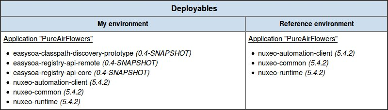

Analyzing the classpath of an application can provide interesting information about the current state of your SOA. This tool (compatible with Java servers only) allows to extract data about which Jars have been used to deploy services on your application.
The EasySOA demo embeds the classpath analysis tool, pre-configured to be triggered when the Pure Air Flowers demo services are launched. Thus, by launching the demo, the tool has already been triggered on theses services ; the results should be visible in the service registry (by browsing to the Pure Air Flowers application) and in the validation dashboard, just like in the example below:

While the demo doesn't allow to configure this tool, you can read more about it on the EasySOA wiki.